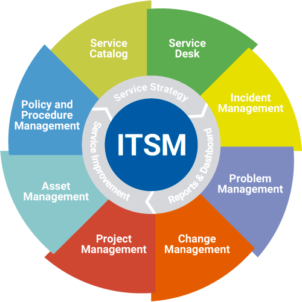
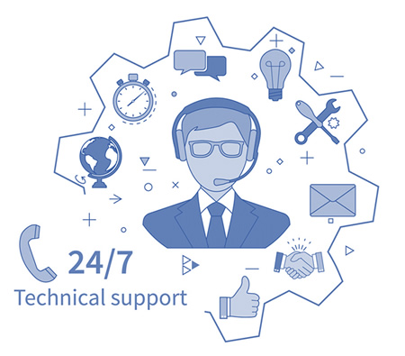

Deepak
Thirunavakarasu

I am an accomplished Service Management Professional with hands-on experience in Enterprise Level
Service Management implementations and end to end Change and Release Management Experience. Having worked with a series
of companies large and small, I have implemented a series of successful interventions and
consistently deliver profitable and value-adding outcomes to client organisations.
Project SPIRIT
Service Program that Innovates Retail IT

Project SPIRIT ( Service Program that Innovates Retail IT) Dec 2019 – Mar 2020
Strategized and successfully delivered program SPIRIT. The program includes projects
in multiple phases with a prime focus on operational cost optimization & to increase operational
efficiency by transforming the legacy manual processes and tools to a digitalized,
automated process for the finance, accounting & IT requests, Incident, Problem, Change, Asset and configuration Management making it truly an
Enterprise Service Management transformation Program.
Project FXAP
ITSM / END USER SUPPORT IMPLMENTATION

During my assignment with NEC an asn ITSM Process owner, I was involved in a massive project which was aimed to provide a centralized 24/7 multi-lingual IT service desk to support and troubleshoot desktop workstations for over 12,000 users throughout the 10 Asia Pacific countries
Project is aimed to plan and deliver releases for a core banking solutions provider faster and better by using
automation capabilities and enabling a robust Release Managment process
A HOLIDAY PROJECT
Win With Wine
via GIPHY
" alt="" />
Holiday Project to identify the best food pairing for wine using APIs